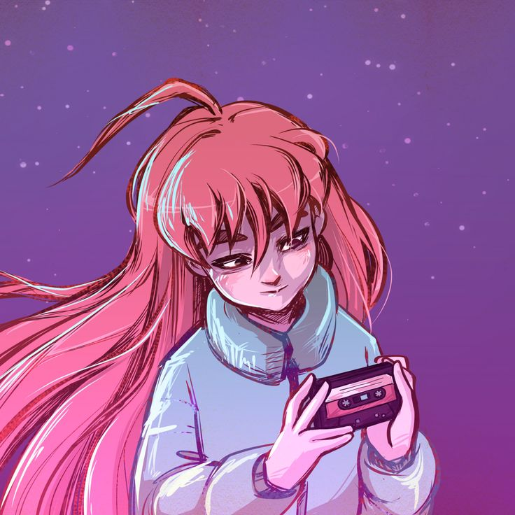

Madeline
Madeline é a protagonista do jogo, enfrentando desafios físicos e psicológicos ao subir a Montanha Celeste.
Sua luta contra sua versão sombria representa a batalha interna contra inseguranças e ansiedade.
Madeline inspira coragem e perseverança para enfrentar nossos próprios obstáculos internos.